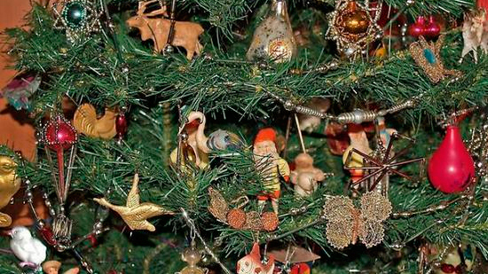
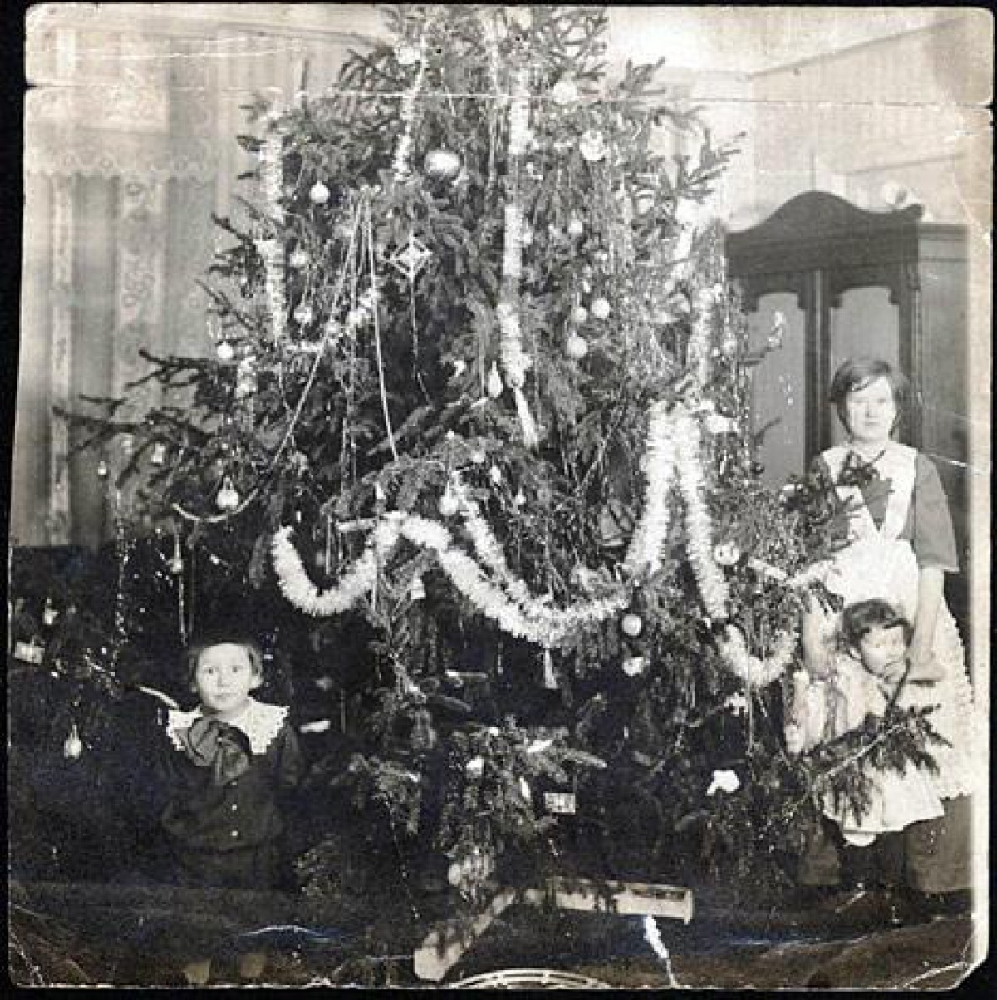

25-60-60")
История елочной игрушки в России
«Деревцо, освещенное фонариками или свечками, увешанное конфетками, плодами, игрушками, книгами, составляет отраду детей, которым прежде уже говорено было, что за хорошее поведение и прилежание в праздник появится внезапное награждение…»
Первый елочный декор на Руси был призван продемонстрировать изобилие, поэтому новогодние деревья украшали горящими свечами, яблоками и изделиями из теста. А для того, чтобы елка стала яркой и сверкающей, добавляли переливающиеся на свету украшения: мишуру, канитель (тонкие металлические нити), блестки. В сочетании с горящими свечами эффект игры света делал зеленую красавицу еще более сияющей и торжественной.
 